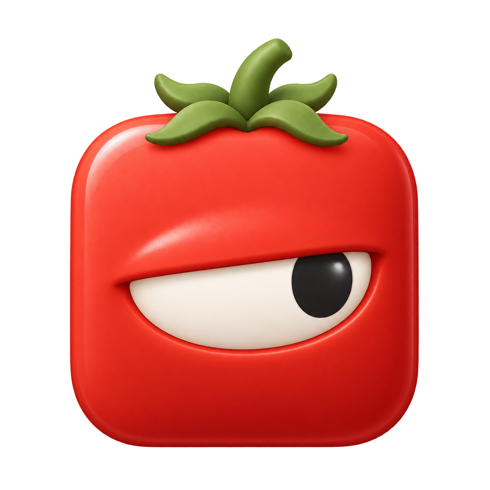

Four expressions for the little eye in your menu bar.Compare at 18 px, slow things down, or scrub to any moment.

Reduce Motion is on. Use each slider to inspect the still poses; automatic playback is disabled.